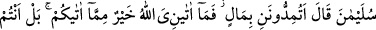

BU İŞİMDE BANA
BİR FİKİR VERİN
32. (Sonra Melike) dedi ki: “Ey ileri gelenler, bu işimde bana bir fikir verin.
(Bilirsiniz) siz yanımda olmadan (size danışmadan) hiçbir işi kestirip atmam.”
33. Onlar, şu cevabı verdiler: “Biz güçlü kuvvetli kimseleriz, zorlu savaş
erbabıyız; buyruk ise senindir; artık ne buyuracağını sen düşün.”
34. Melike: “Hükümdarlar bir memlekete girdiler mi, orayı perişan ederler ve
halkının ulularını alçaltırlar. (Herhalde) onlar da böyle yapacaklardır.” dedi.
35. Ben (şimdi) onlara bir hediye göndereyim de, bakayım elçiler ne (gibi bir
sonuç) ile dönecekler.
36. (Elçiler, hediyelerle) Süleyman’a gelince şöyle dedi: Siz bana mal ile yardım
mı ediyorsunuz? Allâh’ın bana verdiği, size verdiğinden daha iyidir. Hediyenizle
(ben değil) siz sevinirsiniz.
37. (Ey elçi!) Onlara dön; iyi bilsinler ki, kendilerine asla karşı koyamayacakları
ordularla gelir, onları muhakkak surette hor ve hakir halde oradan çıkarırız!
“(Sonra Melike) dedi ki:” Belkıs sözünü, muhtevasına çok önem verdiğini bildirmek
için tekrar nakletti. “Ey ileri gelenler, bu işimde bana bir fikir verin.” Size anlattığım
hususta bana cevap verin ve doğru bildiğiniz/uygun gördüğünüz şeyleri de söyleyin.
Benim durumumla ilgili bana görüş bildirin, yol gösterin; doğru ve isâbetli olan ne ise
söyleyin.
Âyette cevaba “fetvâ” denilmiştir. Çünkü fetvâ, çoğunlukla müşkil hâdiselere
verilecek cevaptır. Belkıs onların karşılaşılan müşkillerin çözümüne muktedir
olduklarını hissettirerek böyle söylemiştir.
Bazıları demiştir ki: “Fetvâ kelimesi “
”dandır. O ise güçlü genç demektir. Fetvâya